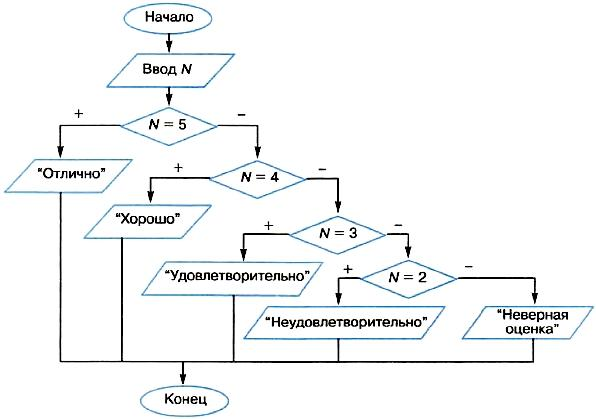

Программирование ветвлений
Алгоритмическая структура ветвления программируется в Паскале с помощью условного оператора If.
Полное ветвление:
If <логическое выражение>
Then <оператор 1>
Else <оператор 2>
Неполное ветвление:
If <логическое выражение>
Then <оператор>
То, что в алгоритмах называется условием, в Паскале является логическим выражением, которое вычисляется в первую очередь. Если его значение равно true, то будет выполняться <оператор 1> (после Then), если – false, то <оператор 2> (после Else) для полной формы или оператор, сразу следующий после условного, для неполной формы (без Else). На ветвях может быть как простой оператор, так и составной – серия операторов в операторных скобках Begin, End.
Пример 1. По длинам трех сторон треугольника a, b, c требуется вычислить его площадь.
Для решения задачи используется формула Герона:
______________________
√p(p - a)(p - b)(p - c)
Где р = (а + b + с)/2 — полупериметр треугольника. Исходные данные должны удовлетворять основному соотношению для сторон треугольника — длина каждой стороны должна быть меньше суммы длин двух других сторон, и длины сторон не могут быть отрицательными величинами.
Имея возможность в одном условном операторе записывать достаточно сложные логические выражения, используя логические операции, мы можем сразу «отфильтровать» все варианты неверных исходных данных.
Program Geron;
Var a, b, c, d, P, S : Real;
Begin
Writeln('Введите длины сторон треугольника: ');
Write('a = ');
Readln(a);
Write('b = ');
Readln(b);
Write('c = ');
Readln(c);
If (a > 0) and (b > 0) and (c > 0) and (a + b > c) and (b + c > a) and (a + c > b)
Then Begin
P:= (a + b + c)/2;
S:= Sqrt(P * (P - a) * (P - b) * (P - c));
Writeln('Площадь = ', S);
End;
Else Writeln('Неверные исходные данные');
End.
Пример 2. Требуется перевести пятибалльную оценку в ее наименование: 5 – «отлично», 4 – «хорошо», 3 – «удовлетворительно», 2 – «неудовлетворительно».
Блок-схема алгоритма:
Этот алгоритм имеет структуру вложенных ветвлений и может быть запрограммирован с использованием условного оператора If следующим образом:
Program Marks_1;
Var n: Integer;
Begin
Writeln('Введите оценку: ');
Readln(n);
If n = 5
Then Witeln('Отлично')
Else If n = 3
Then Writeln('Хорошо')
Else If n = 3
Then Writeln('Удовлетворительно')
Else If n = 2
Then Writeln('Неудовлетворительно')
Else Writeln('Неверная оценка')
End.
Пример 3. Решение рассмотренной в предыдущем примере задачи можно запрограммировать с помощью одного оператора выбора, имеющегося в языке Паскаль. Вот как будет выглядеть такая программа:
Program Marks_2;
Var n: Integer;
Begin
Writeln('Введите оценку: ');
Readln(n);
Case n Of
5: Writeln('Отлично');
4: Writeln('Хорошо');
3: Writeln('Удовлетворительно');
2: Writeln('Неудовлетворительно');
Else Writeln('Неверная оценка')
End;
Оператор выбора имеет следующий формат:
Case <селектор> Of
<список констант 1>: <оператор 1>;
...
<список констант N>: <оператор N>;
Else <оператор>
End
Здесь <селектор> — это выражение любого порядкового типа; <константа> — постоянная величина того же типа, что и селектор; <оператор> — любой простой или составной оператор.
Выполнение оператора выбора происходит так: вычисляется выражение–селектор; затем в списках констант ищется такое значение, которое совпадает с полученным значением селектора; далее исполняется оператор, помеченный данной константой. Если такой константы не найдено, то происходит переход к выполнению оператора, следующего после слова Else.
Пример 4. В этом примере демонстрируется использование списка констант в операторе выбора. Программа сообщает, сдал студент экзамен или не сдал. Если оценка одна из следующих: 3, 4, 5, то экзамен сдан; если 2, то не сдан.
Case n Of
3, 4, 5: Writeln('Экзамен сдан');
2: Writeln('Экзамен не сдан');
Else writeln('Нет такой оценки');
End
Так же как условный оператор, оператор выбора может использоваться в неполной форме, т. е. без ветви Else.
Если применить условный оператор, то эта программа запишется так:
If (n = 3) or (n = 4) or (n = 5)
Then Writeln('Экзамен сдан');
Else If n=2
Then Writeln('Экзамен не сдан');
Else Writeln('Нет такой оценки');
В условии ветвления использовано сложное логическое содержащее операции логического сложения or (или).